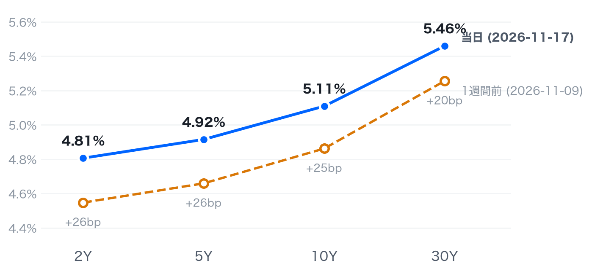

アンソロピックの上場を控え、AIがソフトウェアの有料シートを減らすとの懸念が広がり、11業種がすべて下落した。S&P 500は1.03%安の7,340.53で終えた。米国債はFRB高官のタカ派発言にもかかわらず、2年債中心に買われた。
引け後、エヌビディアは第4四半期売上高ガイダンスを1,300億ドルとし、コンセンサスを上回った。この決算がジェンスン・ファン辞任後に付いたディスカウントを縮小させたかどうかは、11月24日の終値までにエヌビディアがS&P 500をアウトパフォームするかで確認する。
2026年11月19日訂正:本稿の物価判断は、物価軸の8指標のうち6指標で算出したものである。初回発行時にその点を明示せず、物価再加速とコスト圧力局面を確定した判断のように伝え、その判断を債券は逆風、為替は中立を維持する根拠として再び用いた。米労働統計局が2025年10月の消費者物価調査を実施できなかったため、2026年10月の消費者物価前年比とコア前年比の二指標が計算から抜けた。この判断は11月10日以降に新たに加わった消費者物価前月比と生産者物価を併せて反映したものであり、抜けた指標だけの影響とは断定できない。マクロの節の局面・物価軸の判断の段落にこの限界を記し、その判断を根拠に挙げた債券・貴金属とドル経路の段落に限定的な表現を加えた。スコア・局面の分類・資産別の見方とすべての数値は変えていない。判断が誤りだったという訂正ではなく、判断の根拠と限界を明らかにする訂正である。
エヌビディア決算を数時間後に控えた11月17日、売りの中心はAIハードウェアからソフトウェアへ移った。セールスフォースが約9.4%下落したとの報道があり、アンソロピック上場(11月18日に価格決定)を前に、AIエージェントが企業向けソフトウェアの有料シートを減らすとの懸念と、上場前のポートフォリオ調整が要因として挙げられた。前日に大きく売られたブロードコムと光通信株は、むしろ反発した。引け後、エヌビディアは第3四半期売上高と第4四半期売上高ガイダンス(1,300億ドル±3%)をいずれもコンセンサスより高く示した。
当社は、この決算がジェンスン・ファン辞任後のエヌビディア株に乗ったディスカウントのうち、需要と実行を巡る疑念を和らげるとみる。中国のデータセンター売上高を0としても、第4四半期ガイダンスがコンセンサス約1,253億ドルを上回ったためだ。キウム証券のハン・ジヨン研究員は、半導体株の急落が下方修正分をかなり織り込んだと指摘し、エヌビディア決算とアンソロピック上場の成否が、地合い反転のきっかけになり得るとみた。 最も強い反論は、ディスカウントの核心が需要ではなくガバナンスとマージンだというものだ。取締役会はファン前CEOを呼び戻す考えはないと表明し、売上総利益率ガイダンスは前四半期の74.9%を下回る71~72%との報道が出た。CNBCによると、エヌビディアは借り入れたGPUの50%超を中国企業に提供する顧客には当面チップを販売しないと明らかにし、ファン前CEOは12月3日の上院銀行委員会への出席を要請された。 決算前のオプション市場には約7%の株価変動が織り込まれていたとの報道があるのみで、エヌビディアが市場をどれだけ上回るかについての市場の期待値は得られなかった。そのため、需要への疑念が解けた分の相対的な強さがすでに時間外の株価に織り込まれたかどうかは判断できない。
半導体・AIハードウェア業種がアウトパフォームする可能性は決算で裏付けられたが、時間外の上昇は通常取引の終値ではないため、現時点では新たなアイデアは出さない。11月18日の通常取引での初動と、アンソロピック上場後のソフトウェアの反応を見て判断する。ソフトウェア業種は逆に3カ月相対リターンが悪化したが、上場イベントの前日の売りであるため、上場後に巻き戻しが出るかをまず確認すべきだ。投資対象を考えるなら、エヌビディアや半導体ETFとS&P 500の相対比較が最も単純だ。決算直後でオプションのボラティリティ・プレミアムとスプレッドが大きく、取引コストが高い上、保有エクスポージャーとリスク限度は与えられていない。タカ派発言にもかかわらず2年債利回りが4.8%台から低下したことは、ウォン現金と短期債に関する判断を変えない。
この判断は、11月17日終値と比べた11月24日終値で、エヌビディアの累積騰落率がS&P 500の累積騰落率を6.21%ポイント以上上回れば裏付けられ、6.21%ポイント以上下回れば弱まり、ガバナンス・マージンのディスカウントを優先的な説明とみる。その間であれば結論を出さない。方向が合っていても、同期間に情報技術セクターETF(XLK)がエヌビディアと同程度以上に上昇すれば、エヌビディア固有のディスカウントが解消したのではなく業種全体の反発とみて、原因の判断はしない。時間外価格は使わない。同日の20年債入札とFOMC議事要旨の後に、2年債利回りが4.806%から10年債より大きく上昇すれば、カーブ判断を弱める最初のシグナルだ。
出所: Seeking Alpha, Benzinga, Reuters, CBS, TradingKey, Yahoo Finance
| 指数 | 終値 | 騰落 | 基準日 |
|---|---|---|---|
| 日経225 | 58,860.43 | -1.34% | 11月17日 |
| ハンセン | 23,508.17 | -1.03% | 11月17日 |
| 上海総合 | 3,584.58 | -0.50% | 11月17日 |
| DAX | 26,045.37 | -2.08% | 11月17日 |
| FTSE100 | 10,689.87 | -1.76% | 11月17日 |
| ユーロ・ストックス50 | 6,212.11 | -2.15% | 11月17日 |
| VIX | 25.46 | +2.55p | 11月17日 |
六つの指数とVIXはいずれも11月17日の値だ。VIXの騰落はポイントで示す。(2026年11月19日訂正:当初はアジア三指数とDAX・ユーロストックス50を直前のセッションである11月16日の終値で掲載していた。11月17日の終値に改め、下の地域別動向の段落も修正した。)
アジアと欧州も米国と同じ方向に軟調だった。アジア三指数は平均0.96%、欧州三指数は平均2.00%下落した。アジアは三指数がすべて下落し、日経225が1.34%と最も大きく下げた。欧州はユーロストックス50(-2.15%)とDAX(-2.08%)の下げが大きく、FTSE100は1.76%下落した。
夜間のS&P先物(ES)は前日20:30(ET)の高値7,457から04:00(ET)の安値7,395まで0.83%のレンジで推移し、ナスダック先物(NQ)は22:30(ET)の高値から同じ04:00(ET)の安値まで1.52%のレンジで、より大きく振れた。その安値と重なる単一の材料は確認できなかった。08:30(ET)の小売売上高と08:40(ET)のムサレム・セントルイス連銀総裁の発言が寄り付き前に出たが、現物はS&P -0.08%、ナスダック +0.01%、ラッセル2000 -0.20%と、横ばいで始まった。
平均的な銘柄は指数よりやや大きく下落した。等ウエートS&Pから時価総額加重指数を引いた騰落率の差は-0.43%ポイントで、幅広い銘柄が下落した。S&P 500とナスダックは日中レンジの中ほどで終え、ラッセル2000は安値圏で終えた。
安値圏引けの境界は、S&P 500・ナスダック・ラッセル2000の三指数の日次観測値2,253個で再計算した基準だ。終値がその日の高値と安値の間のどこで終わったかを毎日測って集め、その観測値を低い順に並べたときの下から4分の1の地点と上から4分の1の地点を境界とする。終値の位置が上側の境界以上なら高値圏引け、下側の境界以下なら安値圏引けと呼ぶ。
ソフトウェアの売りとエヌビディア決算待ちが株式を押し下げ、その株安の中で米国債が短期ゾーン中心に買われた日だ。VIXは2.55ポイント上昇の25.46と、直近2年間(504営業日)でこれより高かった日が32日しかない水準まで上昇した。ドルと原油、金はほとんど動かなかった。NSAの内部機密ネットワークに障害が出たとの報道も場中に出たが、NSAは定期メンテナンス中の一時的な性能低下だと説明しており、報道の時刻と価格反応の関係は確認できていない。通常取引後にはエヌビディア決算が発表され、時間外の上昇率については3~4.6%と報道によって幅があった。
出所: CNN, Kiplinger, FXStreet, TradingKey, Yahoo Finance
| 指数 | 終値 | 騰落率 |
|---|---|---|
| ナスダック | 24,328.38 | -0.74% |
| S&P500グロース | 127.97 | -0.89% |
| S&P500 | 7,340.53 | -1.03% |
| S&P500バリュー | 236.68 | -1.23% |
| ラッセル2000 | 2,701.87 | -1.50% |
| ダウ・ジョーンズ | 50,759.42 | -1.64% |
| セクター | 騰落率 |
|---|---|
| エネルギー | -0.52% |
| 資本財・サービス | -0.55% |
| 一般消費財 | -0.89% |
| 情報技術 | -0.91% |
| 素材 | -1.22% |
| 生活必需品 | -1.23% |
| ヘルスケア | -1.41% |
| コミュニケーション・サービス | -1.46% |
| 不動産 | -1.49% |
| 公益事業 | -1.59% |
| 金融 | -1.91% |
ソフトウェア急落とエヌビディア決算待ちの中、S&P 500は1.03%安の7,340.53で終えた。ナスダックは0.74%安の24,328.38、ダウは1.64%安の50,759.42、ラッセル2000は1.50%安の2,701.87だ。下落率は平時の一日の動きと同程度だったが、11業種が一つ残らず下落し、前日に上昇した生活必需品(-1.23%)と公益事業(-1.59%)も今回は逃避先にならなかった。
序盤に急落した後、一部を取り戻した一日だった。S&P 500は始値の7,411が事実上その日の高値となり、寄り付き後の最初の1時間で7,288と始値比1.66%下落したが、その下げ幅の半分近くを取り戻し、日中レンジの中ほどで終えた。ナスダックは同じ時間帯に始値比2.12%安の23,993まで下げた後、24,323まで戻し、エヌビディアも150.33ドルまで4.19%下げた後、155.46ドルに回復した。安値と重なる単一の材料は確認できなかった。ダウは終盤に1,000ポイント超下げた安値をつけたとの報道があったが、場中データでは確認していない。
業種別では情報技術が最も大きな寄与を示したが、下落率自体は小さかった。推定寄与度は情報技術 -0.31%ポイント、金融 -0.20%ポイント、コミュニケーション・サービス -0.18%ポイント、ヘルスケア -0.13%ポイント、一般消費財 -0.12%ポイント、公益事業 -0.06%ポイント、生活必需品 -0.04%ポイント、資本財 -0.03%ポイント、エネルギー -0.01%ポイントで、業種の合計では説明できない部分は+0.06%ポイントだ。情報技術業種の下落は0.91%にとどまり、規模のわりに下げが小さかった。ソフトウェアが急落する間に半導体と光通信が反発し、業種内で相殺されたためだ。金融(-1.91%)とヘルスケア(-1.41%)がより大きく下げたことで、バリュー株が1.23%下落し、グロース株(-0.89%)より弱かった。
推定寄与度は業種ウエートを直接取得せず、直近252営業日の指数・業種リターンで推定したウエートを掛けた値だ。素材と不動産はウエートを推定できず除外した。騰落幅は直近60営業日の平均的な一日の変動と比べ、S&Pが1.07倍、ナスダックが0.55倍、ラッセル2000が1.33倍だ。
今回の下落は前日とは性格が異なる。前日は損失が大型テクノロジー株に集中し、平均的な銘柄は指数ほど下げなかったが、この日は平均的な銘柄も指数と同程度下げ、ラッセル2000は安値圏で終えた。売りが市場全体に広がった点で、一日限りの業種ノイズとはみなしにくい。一方、S&P 500とナスダックが序盤の安値から反発して終えた点は、パニック売りには広がらなかったことを意味する。
出所: Seeking Alpha, Benzinga, Briefs
| 年限 | 終値 | 前日比(bp) | 1週間前 | 週間変化(bp) |
|---|---|---|---|---|
| 2Y | 4.806% | -2.1 | 4.547% | +25.9 |
| 5Y | 4.915% | -2.0 | 4.659% | +25.6 |
| 10Y | 5.109% | -1.2 | 4.862% | +24.7 |
| 30Y | 5.460% | -0.8 | 5.256% | +20.4 |
FRB高官のタカ派的な発言にもかかわらず、米国債は短期ゾーン中心に小幅に買われた。2年債利回りは2.1bp低下の4.806%、5年債は2.0bp低下の4.915%、10年債は1.2bp低下の5.109%、30年債は0.8bp低下の5.460%で引けた。10年債の一日の動きは通常の日の3分の1程度と小さかった。長期債の水準は依然として高い。10年債は直近2年(504営業日)のうちこれより高かった日が22日しかなく、30年債は18日しかない。

カーブチャートの「今日」は11月17日の終値、「1週間前」は11月9日の終値である。1週間前と比べると、2年債は25.9bp、10年債は24.7bp、30年債は20.4bp高い。
一日では、2年債が10年債より0.9bp多く低下したブルスティープ化である。2s10sは30.3bp(前日29.4bp)、5s30sは54.5bpだ。1週間前と比べると、2年債が30年債より5.5bp多く上昇したベアフラット化がカーブの大きな形であり、この日はその流れの中で短期ゾーンが2営業日連続で小幅に戻した程度である。
短期債利回りが低下した順序がこの日の疑問点だ。ムサレム総裁は寄り付き前に、2027年春より前に最大4回の追加利上げが必要になる可能性があると述べ、小売売上高のコントロールグループも予想より強く出たが、2年債利回りはむしろ低下した。小売売上高の直後に金利は一時上昇したが、株安のなかで安全資産買いに戻ったと報じられた(10年債は日中に約5.129%)。CME FedWatchでは12月の25bp利上げ確率が95.5%と報じられており、12月の利上げはほぼ織り込み済みで、ムサレム発言が加えた情報は小さかったという説明も成り立つ。二つの説明は日中の政策金利期待を直接測ったデータがなければ区別できないが、そのデータはない。
名目金利を実質金利と期待インフレに分解した最新データは11月16日分である。その日の10年債利回りの3bp低下は、実質金利+1bp、期待インフレ-4bpに分かれ、原油の急落と同じ方向だった。5営業日に広げると、26bpの上昇のうち29bpが実質金利によるものだった。11月17日分は期待インフレだけが出ており、10年期待インフレは1bp上昇の2.21%である。名目金利が低下した日に期待インフレが上昇したため、この日の低下は実質金利側から来た可能性があり、11月17日の実質金利が出れば確認できる。期待インフレにはリスク・流動性プレミアムも混じっている。ハイイールド・スプレッドは11月16日に3.34%となり、一日で11bp拡大した。
5年先5年物の名目金利は5.31%、実質金利は3.16%(11月16日基準)。期待インフレ側の数値とのクロスチェックはできず、リスクプレミアムが混じった値である。
出所: CNBC
| 通貨ペア | 終値 | 騰落率 | 基準日 |
|---|---|---|---|
| DXY | 103.507 | -0.09% | 11月17日 |
| USD/KRW | 1,334.73 | -0.10% | 11月17日 |
| USD/JPY | 159.338 | -0.09% | 11月17日 |
| EUR/USD | 1.1010 | +0.10% | 11月17日 |
株が売られた日にも、ドルはほとんど動かなかった。ドル指数は0.09%低下の103.507で、平時の一日の動きの3分の1に届かず、ユーロ/ドルは0.10%上昇の1.1010、ドル/円は0.09%低下の159.338円だった。ドル/ウォンは0.10%低下の1,334.73ウォンで、直近2年(504営業日)のうちこれより低かった日が11日しかない水準にとどまっている。
前日は株の急落でドルがユーロより強かったが、この日はリスク回避がドル買いにつながらなかった。米2年債利回りが2.1bp低下し、金利面ではドルにやや不利だった。その程度の金利変化に見合った小幅なドル安である。相手国の金利を併せて測っていないため、金利差が実際にどれだけ動いたかは確認できず、個別通貨に固有の材料も見つからなかった。
為替はニューヨーク16:00 ETの価格で、前営業日の同時刻比である。清算値とは異なる場合がある。
| 品目 | 終値 | 騰落率 |
|---|---|---|
| WTI | $85.70 | +0.20% |
| Brent | $92.84 | +0.53% |
| 天然ガス | $3.191 | +1.85% |
| 金 | $3,850.20 | -0.11% |
前日に3%超下落した原油は、この日ほぼ横ばいだった。WTIは0.20%上昇の85.70ドル、ブレントは0.53%上昇の92.84ドルで引け、天然ガスは1.85%上昇の3.191ドル、金は0.11%下落の3,850.20ドルである。WTIと金はいずれも、平時の一日の動きの10分の1にも届かなかった。
WTIは日中、始値比2.76%高の87.38ドルまで上昇したが、上昇分の大半を失った。その上昇と失速を説明する材料は確認できなかった。ブレントとWTIの価格差は7.14ドルで、前営業日の6.82ドルから拡大した。表のWTIは12月限、ブレントは1月限のため、価格差には限月の違いも含まれる。金は株が安値をつけていた寄り付き後に3,894ドルまで上昇したが、その後押し戻された。寄り付き後の上昇の原因は確認できず、金は国債のように上昇を続けられなかった。10年実質金利が11月16日までの5営業日で29bp上昇し、金を保有する負担は増したが、この日金が押し戻された直接の材料は確認できなかった。
商品・為替はニューヨーク16:00 ETの価格で、前営業日の同時刻比である。清算値とは異なる場合がある。
マイクロソフト(-2.27%)とサービスナウ(-6.51%)は、ソフトウエア関連株の下げを拡大させた銘柄である。アンソロピックの上場を控え、AIエージェントが企業向けソフトウエアの有料シートを減らすとの懸念と、上場前のポートフォリオ調整が重なった売りだとの報道があり、セールスフォースが約9.4%下落して業種を主導した。サービスナウは、決算発表後の14営業日で、契約成長の鈍化見通しのなか時価総額が約590億ドル減少したと報じられた。
アルファベット(-1.30%)はコミュニケーション・サービス業種の下落を助長したが、確認された材料はない。
ブロードコム(+2.46%)は半導体・AIハードウエア関連株の反発を支えた銘柄だが、確認された材料はない。
GEベルノバ(+2.14%)は送電網投資関連の反発に加わったが、確認された材料はない。
ユナイテッドヘルス(-5.42%)はヘルスケア業種の下げを拡大させた。メディケア・メディケイド・サービスセンター(CMS)が、メディケア・アドバンテージのリスク調整データの検証監査を拡大する案を示し、年約90億ドルが回収される可能性があるとの推計が報じられた。ウォーレン上院議員がユナイテッドヘルス、CVS、シグナなど大手ヘルスケア企業の分割を求めたとの報道も重なり、ヒューマナとCVSも一緒に下落した。ディフェンシブ・スタイルの中で、ヘルスケアが規制関連の材料に揺さぶられた日である。
光通信株もこの日は上昇した。米国が中国製データセンター機器への制限を進めるとの報道を受けて、コヒレント(+3.65%)とルメンタム(+2.56%)が上昇し、前日に7%超下落したマーベル(+2.33%)も反発した。一日の反発ではあるが、一カ月の流れはまだ弱い。直近20営業日で、AIインフラ関連株は市場の動きを考慮してもなお12.79%劣後した。グロース−バリュー、大型−小型、半導体の三軸に分けると、半導体軸の寄与が-12.97%ptでほぼ全部を占め、大型−小型の+0.53%pt、グロース−バリューの-0.13%ptは小さい。三軸で説明できない部分は-0.22%ptにとどまる。市場の一部には、BofAの11月ファンドマネージャー調査で、回答者の52%が6カ月以内に主要ハイパースケーラー一社が設備投資の削減を発表するとみており、10月の30%から大きく増えたとの意見もあった。
AIインフラ関連株(マーベル・コヒレント・ルメンタム・GEベルノバ・バーティブ)ベースで、市場感応度3.17を考慮した一日ごとの超過収益の20日合計である。軸ごとの寄与は、直近60営業日で測った感応度を掛けた値である。
出所: Seeking Alpha, Benzinga, CNBC, 24/7 Wall St., GuruFocus, JKN, Yahoo Finance, Invezz
10月の小売売上高と鉱工業生産が新たに発表されたが、米景気局面は成長横ばい・物価再加速のコスト圧力が6日続いている。小売売上高が消費軸を横ばいから改善へ引き上げ、成長スコアは0.065から0.233に上昇したが、依然として横ばいの範囲内であり、物価スコア0.647は変わらず再加速を示している。物価面の判断は、消費者物価前年比の二指標が抜けた、利用可能な指標ベースである。スコアが現在の局面を示しているため、局面の移行先はない。
鉱工業生産の減少は生産・活動軸を悪化方向に押したが、その力は弱く、減少分も大半は公益事業の反動によるものだった。局面を再び動かしうるデータは、11月25日のPCE物価とGDPである。
雇用軸は改善で、新たな発表はない。非農業部門雇用者数の3カ月平均が+28Kから+137Kに上昇したことが判定を支える。雇用軸 +0.564
| 指標 | Actual | Forecast | Previous | 発表日 | 予想比 | 前回比 | トレンド |
|---|---|---|---|---|---|---|---|
| 求人件数(9月) | 7,523K | — | 7,190K | 2026-09基準月 | 改善 | 横ばい · 3カ月平均 7,435K → 7,349K | |
| 新規失業保険申請件数 | 200,000 | — | 191,000 | 2026-11-12 (11月7日の週) | 悪化 | 改善(わずか) · 4週平均 199K → 195K | |
| 新規申請件数4週平均 | 195,250 | — | 195,250 | 2026-11-12 (11月7日の週) | 横ばい | 改善(わずか) · 4週平均 200K → 196K | |
| 失業保険継続受給者数 | 1,697,000 | — | 1,717,000 | 2026-11-12 (10月31日の週) | 改善 | 横ばい · 4週平均 1,707K → 1,708K | |
| 非農業部門雇用者数変化(10月) | +165K | — | +60K | 2026-11-06 | 改善 | 改善(明確) · 3カ月平均 +28K → +137K | |
| 失業率(10月) | 4.1% | — | 4.2% | 2026-11-06 | 改善 | 改善(わずか) · 3カ月平均 4.20% → 4.13% | |
| 平均時給 MoM(10月) | +0.37% | — | +0.26% | 2026-11-06 | 改善 | 改善(明確) · 3カ月平均 +0.20% → +0.32% |
生産・活動軸は悪化で、九つのうち六つが悪化、一つは横ばい、二つは判定と逆方向である。根拠は住宅と貿易だ。中古住宅販売は397万件から375万件に減って明確に悪化し、貿易収支の赤字は3カ月平均で大きく拡大し、住宅着工も1,288Kから1,221Kへ緩やかに悪化した。この日発表の10月鉱工業生産は0.43%減少したが、トレンド判定は悪化(わずか)にとどまった。判定と逆に動いた指標はフィラデルフィア連銀製造業指数で、3カ月平均が17.1から35.4へ明確に上昇した。生産・活動軸 -0.628
| 指標 | Actual | Forecast | Previous | 発表日 | 予想比 | 前回比 | トレンド |
|---|---|---|---|---|---|---|---|
| 鉱工業生産 MoM(10月) | -0.43% | — | +0.73% | 2026-11-17 | 悪化 | 悪化(わずか) · 3カ月平均 +0.19% → +0.07% | |
| 耐久財受注 MoM(9月) | +1.91% | — | +0.14% | 2026-09基準月 | 改善 | 悪化(わずか) · 3カ月平均 +1.70% → +0.98% | |
| 製造業受注 MoM(9月) | +1.84% | — | +0.33% | 2026-09基準月 | 改善 | 悪化(わずか) · 3カ月平均 +1.35% → +0.98% | |
| 建設支出 MoM(9月) | -1.85% | — | +1.98% | 2026-09基準月 | 悪化 | 改善(わずか) · 3カ月平均 -0.18% → -0.01% | |
| 住宅着工件数(9月) | 1,221K | — | 1,288K | 2026-09基準月 | 悪化 | 悪化(緩やか) · 3カ月平均 1,345K → 1,293K | |
| 新築住宅販売件数(9月) | 676K | — | 680K | 2026-09基準月 | 悪化 | 改善(わずか) · 3カ月平均 652K → 668K | |
| 中古住宅販売件数(10月) | 375万 | — | 397万 | 2026-11-12 | 悪化 | 悪化(明確) · 3カ月平均 4,127K → 3,883K | |
| 貿易収支(9月) | -$105.05B | — | -$105.74B | 2026-09基準月 | 改善 | 悪化(明確) · 3カ月平均 -66.6 → -101.2 | |
| 実質GDP QoQ年率(第3四半期) | +3.4% | — | +2.2% | 2026年第3四半期 | 改善 | — | |
| フィラデルフィア連銀製造業景気指数(10月) | 20.9 | — | 37.8 | 2026-10基準月 | 悪化 | 改善(明確) · 3カ月平均 17.1 → 35.4 |
10月の鉱工業生産は前月比0.43%減少し、9月の0.73%増から反転した(FRED基準)。発表前のコンセンサスは確認できなかった。
FRBは、製造業生産が0.3%増加したと発表した。耐久財製造業は0.5%増加し、その中心は4.4%増加した自動車・部品生産だった。非耐久財製造業は横ばいで、鉱業生産は0.8%減少した。ヘッドラインを押し下げたのは公益事業である。公益事業生産は9月に4.4%増加したあと10月に4.3%反落し、電力と天然ガスの公益事業がともに減少した。製造業の稼働率は76.0%で、1972~2025年の長期平均より2.2%pt低い。
ヘッドラインの減少は大半が公益事業の一時的な反動で、INGはその原因を穏やかな天候とみた。自動車が牽引した製造業はむしろ増加し、稼働率が長期平均を下回るため、設備面の圧力から来る物価シグナルも弱い。このため今回の発表は、生産・活動軸の悪化判定にも、コスト圧力局面の判断にも新たな方向を与えない。FRBは11月24日に年次改定を予告しており、今回の数値と前月分は1972年以降の全期間にわたって改定される可能性がある。
消費軸は横ばいから改善に上がり、二指標のうち二つが改善である。10月の小売売上高は0.21%と9月の0.83%から鈍化したが、3カ月平均が+0.28%から+0.83%に上昇し、トレンドは改善(緩やか)だ。ミシガン大消費者信頼感も3カ月平均が48.0から51.7に上昇した。両指標とも直前比では悪化しており、改善の強さは緩やかである。消費軸 +0.764
| 指標 | Actual | Forecast | Previous | 発表日 | 予想比 | 前回比 | トレンド |
|---|---|---|---|---|---|---|---|
| 小売売上高 MoM(10月) | +0.21% | 0.2% | +0.83% | 2026-11-17 | 予想通り= | 悪化 | 改善(緩やか)・3カ月平均 +0.28% → +0.83% |
| ミシガン大学消費者信頼感指数(9月) | 48.1 | — | 51.7 | 2026-09基準月 | 悪化 | 改善(緩やか)・3カ月平均 48.0 → 51.7 |
Censusによると、10月の小売・外食売上高は7,482億ドルで前月比0.2%増(FRED基準では0.21%)となり、予想の0.2%と同じだった。Censusは、この増加の90%信頼区間が0を含み、実際の変化が0と異なるとみる統計的根拠は乏しいと説明した。9月の0.8%増は改定されず、10月の売上高は1年前より6.8%多い。
ヘッドラインを押し下げたのは自動車だった。自動車・部品ディーラー売上高は1.6%減少し、自動車を除く売上高は0.6%増加した。ガソリンスタンド売上高は1.5%増加し、自動車とガソリンスタンドを除く売上高は0.5%増と9月と同じペースだった。業種別では無店舗販売が1.2%増加し、家具販売は2.3%減少した。INGが集計したコントロールグループは0.6%増と予想の0.3%を上回り、9月の値も0.5%に上方改定された。コントロールグループはCensusの発表文には別掲されていない値である。
自動車を除けば基礎的な需要は維持された。名目売上高であるため、10月の消費者物価の上昇分を考慮すると実質売上高は横ばい以下との解釈がINGとネイビー連邦信用組合から出ており、この点が消費軸の改善を成長加速と読みにくくしている。FRBの政策金利の見通しから見ると、需要が崩れて利上げを遅らせる根拠は出ていない。小売売上高が予想を下回れば12月の利上げ判断を修正するという条件も満たされなかった。この発表は成長スコアを押し上げたが横ばいの範囲を超えられず、コスト圧力の判断は変わらない。
物価軸は再加速で、新たな発表はない。物価軸は8指標のうち6指標で算出した。2025年10月のCPIの比較基準値が公式に提供されていないため、2026年10月の前年同月比の2指標を計算から除外した。再加速は利用可能な指標ベースのシグナルであり、欠測の内容次第で物価判断が変わる可能性がある。消費者物価前月比の3カ月平均が+0.04%から+0.46%に上昇したことが判定を支えている。物価軸 +0.647
| 指標 | Actual | Forecast | Previous | 発表日 | 予想比 | 前回比 | トレンド |
|---|---|---|---|---|---|---|---|
| PPI最終需要 MoM(10月) | +0.35% | — | +1.41% | 2026-11-13 | 下落 | 再加速(明確)・3カ月平均 +0.17% → +0.72% | |
| CPI MoM(10月) | +0.35% | — | +0.65% | 2026-11-10 | 下落 | 再加速(明確)・3カ月平均 +0.04% → +0.46% | |
| Core CPI MoM(10月) | +0.30% | — | +0.33% | 2026-11-10 | 下落 | 再加速(明確)・3カ月平均 +0.14% → +0.31% | |
| PCE物価 YoY(9月) | 3.65% | — | 3.44% | 2026-09基準月 | 上昇 | 膠着・3カ月平均 3.62% → 3.49% | |
| Core PCE YoY(9月) | 3.12% | — | 3.03% | 2026-09基準月 | 上昇 | 膠着・3カ月平均 3.10% → 3.05% | |
| ミシガン大学1年先期待インフレ率(9月) | 4.6% | — | 4.0% | 2026-09基準月 | 上昇 | 鈍化(緩やか)・3カ月平均 4.70% → 4.27% |
直前比はActualをPreviousと比較したもので、トレンドは直近3カ月平均をその前の3カ月平均と比較したものである(週間の失業保険申請は4週平均同士)。トレンドの強さはその指標が普段動く幅に対する大きさで、小さな変化は横ばいとみる。四半期指標のGDPは二つの比較で同じ数字を使うため、直前比のみ掲載する。
FRBの次の一手は12月9日のFOMCでの25bp利上げという判断を維持し、時期も変えない。CME FedWatchベースの12月25bp利上げ確率は、媒体により95.5%と95.7%と報じられ、1月会合までの累積50bp利上げ確率は69.4%との集計が出た。観測時刻が確認できないため、前日の報道値と同じ基準では比較しない。ムサレム・セントルイス連銀総裁は、実質政策金利を来春までに2~2.5%に引き上げるべきだとし、2027年春より前に最大4回の追加利上げが必要になる可能性があると述べた。今年は投票権を持たないが、1月・3月の追加利上げ議論に根拠を加える発言だ。
小売売上高が予想に一致したため、小売売上高が予想を下回れば判断を修正するという前日の条件は満たされなかった。残る反証条件は以下の通りで、次の物価確認は11月25日のPCE物価だ。
12月9日のFOMCまでにFRBの声明や議長発言が追加利上げの余地を閉ざせば、12月利上げ中心の判断を撤回する。11月25日の10月PCE物価が予想を下回り、CME FedWatchの12月利上げ確率が消費者物価発表前の報道値(84%)を下回れば、12月利上げ中心の判断を修正する。
物価再加速が生産者物価でも裏付けられ、12月の利上げに続き1月・3月の追加利上げまで取り沙汰されるなか、実質金利がピークを過ぎて緩和が再開されるとの期待は一段と後ずれした。ここでの物価再加速は、消費者物価前年比の二指標が抜けた、利用可能な指標ベースのシグナルである。この日のムサレム総裁の発言は、その議論に重みを加えた。そのため、デュレーションには逆風との見方を維持し、金は保有コストの低下という経路が弱まったものの、地政学・財政ヘッジの需要が残るため中立とする。30年債が5.4%を下回って5営業日とどまるか、コアCPI前月比が0.2%以下に低下すれば債券を中立に戻し、30年債が5.05%を割り込めば追い風とみる。金は、金の20日騰落率が+15%を超えるか、10年実質金利が再び低下すれば、追い風への引き上げを検討する。
消費軸は改善に上がったが名目売上高に頼った改善で、生産・活動軸は悪化にとどまり、成長スコアは横ばいの範囲だ。成長期待がバリュエーションを支える力と高い実質金利が押さえる力が拮抗し、株式は中立を維持する。ISM製造業PMIが50超で続くか10年債利回りが4.5%を下回れば、株式を追い風として再評価する。エネルギーは、地政学プレミアムが3~6カ月の構造要因ではなくイベント要因であるため中立だ。ホルムズ海峡の通航障害が続くかと輸送の正常化が、この判断を再び開く条件となる。
物価の鈍化が実質金利差を縮小させてドルを弱めるという経路は、物価再加速と12月の利上げ経路に阻まれた。このうち物価再加速は利用可能な指標ベースであり、確定した判断ではない。米政策金利の経路が上方に移ってドル高を支えるが、金利差そのものや他の中央銀行の経路は測っておらず、ドル水準もすでに高いため、追い風までは引き上げない。12月の50bp利上げ確率が50%を超えれば追い風に、ドル指数が20日間で3%以上下落するか、FedWatchに利下げ確率が再び現れれば逆風に変更する。
このグループはマクロ局面とは別に動く。消費・生産指標とは無関係に、企業のAIデータセンター投資がメモリー需給を支えるため、メモリーは追い風を維持する。AIインフラは投資サイクル自体は追い風だが、高い長期金利による割引率の負担と発注者の資金調達負担が相殺し、中立だ。エヌビディアの第4四半期ガイダンスは需要面の根拠を加えたが、3~6カ月の方向を変えるにはハイパースケーラーの第4四半期設備投資ガイダンスも併せて確認される必要がある。30年債が5.4%を上回ってさらに上昇すればAIインフラの割引率負担が増す方向に、マイクロンなど主要企業のガイダンス上方修正が途切れればメモリーの判断を再び開く。
小売売上高のヘッドラインは予想と同じで、コントロールグループは予想の二倍だったが、国債利回りは発表直後に一時上昇した後、株安のなかで低下したと報じられた。終値では2年債が2.1bp低下し、発表よりも株安がその日の金利をより動かした。株式は発表とムサレム発言の後も横ばい圏で寄り付き、取引開始後に下落したため、二つの材料に即座に反応した幅は小さかった。鉱工業生産はコンセンサスを確認できず、予想とどれだけ違ったかを測れない。
出所: CNBC、TechFlow、ING、PBS、Reuters
| 指数 | 順位(5営業日前) | 1カ月 | 3カ月 | SPY比3カ月 | 対比の変化 | 12-1モメンタム | ボラティリティ | 1日VaR 95% | ベータ | 50/200日線 | 52週高値比 |
|---|---|---|---|---|---|---|---|---|---|---|---|
| エネルギー XLE | 5(6) | -6.5% | +0.2% | +4.8%p | -0.5%p | +51.6% | 24.7% | 2.9% | -0.01 | 下/上 | -9.5% |
| 金融 XLF | 6(7) | +3.6% | -0.4% | +4.2%p | +0.5%p | +6.6% | 16.7% | 1.6% | 0.62 | 上/上 | -3.6% |
| 一般消費財 XLY | 8(5) | +2.3% | -1.0% | +3.5%p | -2.1%p | 0.0% | 20.0% | 1.7% | 0.97 | 上/上 | -5.4% |
| 超大型株Top 50 XLG | 10(12) | -6.8% | -5.1% | -0.6%p | +0.2%p | +9.0% | 18.4% | 2.0% | 1.16 | 下/下 | -9.1% |
| 銀行 KBE | 12(14) | +2.6% | -5.8% | -1.2%p | +1.5%p | +12.8% | 17.2% | 1.6% | 0.47 | 下/上 | -9.1% |
| ソフトウェア IGV | 14(11) | -9.7% | -6.9% | -2.4%p | -2.4%p | -1.3% | 34.6% | 3.5% | 1.36 | 下/上 | -15.0% |
| 住宅建設 XHB | 15(13) | +5.3% | -7.9% | -3.4%p | -1.8%p | -7.8% | 29.0% | 2.5% | 0.84 | 上/下 | -17.5% |
| 資本財・サービス XLI | 16(19) | -1.2% | -9.2% | -4.7%p | +1.6%p | +10.9% | 18.3% | 1.6% | 0.86 | 下/下 | -11.4% |
| 小型株 IWM | 17(15) | -0.8% | -10.6% | -6.1%p | -1.7%p | +15.4% | 18.3% | 1.7% | 1.00 | 下/下 | -11.6% |
| 小型グロース IWO | 20(20) | -1.1% | -13.2% | -8.6%p | -1.7%p | +10.2% | 23.0% | 2.2% | 1.27 | 下/下 | -14.3% |
| モメンタム・ファクター MTUM | 21(22) | -11.7% | -14.4% | -9.9%p | +2.4%p | +21.0% | 32.7% | 3.4% | 1.71 | 下/下 | -24.2% |
| 送電網 GRID | 22(23) | -8.1% | -14.9% | -10.4%p | +2.4%p | +11.5% | 29.9% | 3.5% | 1.40 | 下/下 | -21.9% |
| 防衛 ITA | 23(21) | +0.5% | -15.1% | -10.6%p | +0.4%p | +1.1% | 21.9% | 2.1% | 0.77 | 下/下 | -17.4% |
| 半導体・AIハードウェア SMH | 24(25) | -16.1% | -18.0% | -13.4%p | +1.2%p | +59.5% | 47.5% | 5.2% | 2.39 | 下/下 | -31.2% |
| 金属・鉱業 XME | 25(24) | -12.0% | -23.8% | -19.2%p | -4.7%p | +10.7% | 35.1% | 3.8% | 1.54 | 下/下 | -32.8% |
| 指数 | 順位(5営業日前) | 1カ月 | 3カ月 | SPY比3カ月 | 対比の変化 | 12-1モメンタム | ボラティリティ | 1日VaR 95% | ベータ | 50/200日線 | 52週高値比 |
|---|---|---|---|---|---|---|---|---|---|---|---|
| 生活必需品 XLP | 1(2) | +4.9% | +6.4% | +10.9%p | +0.5%p | +16.0% | 17.7% | 1.4% | 0.00 | 上/上 | -1.2% |
| ヘルスケア XLV | 2(1) | +5.5% | +5.8% | +10.4%p | -4.9%p | +17.6% | 17.6% | 1.4% | 0.43 | 上/上 | -2.3% |
| 低ボラティリティ SPLV | 3(4) | +5.1% | +2.4% | +6.9%p | +0.6%p | +4.5% | 12.4% | 1.0% | 0.20 | 上/上 | -1.5% |
| 配当 SCHD | 4(3) | +3.1% | +1.4% | +6.0%p | -2.1%p | +30.1% | 13.1% | 1.1% | 0.31 | 上/上 | -2.5% |
| 公益事業 XLU | 7(8) | +5.0% | -0.6% | +3.9%p | +0.7%p | -4.2% | 15.3% | 1.4% | 0.19 | 上/下 | -7.1% |
| クオリティ・ファクター QUAL | 9(9) | -3.2% | -2.6% | +1.9%p | -0.1%p | +16.9% | 13.3% | 1.0% | 0.80 | 下/上 | -4.3% |
| 指数 | 順位(5営業日前) | 1カ月 | 3カ月 | SPY比3カ月 | 対比の変化 | 12-1モメンタム | ボラティリティ | 1日VaR 95% | ベータ | 50/200日線 | 52週高値比 |
|---|---|---|---|---|---|---|---|---|---|---|---|
| 欧州 VGK | 11(10) | +0.6% | -5.5% | -0.9%p | -1.1%p | +9.9% | 15.4% | 1.3% | 0.68 | 下/下 | -6.4% |
| 日本 EWJ | 13(17) | -6.6% | -6.4% | -1.9%p | +3.0%p | +18.0% | 21.5% | 1.8% | 1.24 | 下/下 | -10.7% |
| 新興国 EEM | 18(18) | -8.0% | -11.9% | -7.3%p | -1.1%p | +17.4% | 25.4% | 2.7% | 1.39 | 下/下 | -18.2% |
| 中国 MCHI | 19(16) | -4.8% | -12.6% | -8.1%p | -3.5%p | -18.4% | 17.5% | 1.8% | 0.30 | 下/下 | -24.2% |
| 指数 | 順位(5営業日前) | 1カ月 | 3カ月 | SPY比3カ月 | 対比の変化 | 12-1モメンタム | ボラティリティ | 1日VaR 95% | ベータ | 50/200日線 | 52週高値比 |
|---|---|---|---|---|---|---|---|---|---|---|---|
| S&P 500 SPY | – | -4.4% | -4.5% | 0.0%p | – | +15.3% | 15.5% | 1.2% | 1.00 | 下/上 | -6.0% |
| S&P 500均等加重 RSP | – | +1.1% | -2.5% | +2.0%p | – | +15.7% | 13.2% | 1.0% | 0.65 | 上/上 | -3.4% |
| ナスダック100 QQQ | – | -8.6% | -8.2% | -3.6%p | – | +18.5% | 24.8% | 2.7% | 1.49 | 下/下 | -13.5% |
価格ベースの市場局面は10月30日から横ばいで13営業日目、直前の局面は強気だった。この日も一日だけで見ると短期弱気の条件に入っており、2営業日目だ。SPYが732.44で50日線(762.89)を下回り、52週高値からの下落率が-5.99%と短期弱気の基準(-5%)を超えたためだ。この状態が11月18日の終値まで続いて3営業日になると、局面は短期弱気に切り替わる。200日線(729.79)はまだSPYの下にあり、20営業日前の722.78より上昇しているため、長期弱気の条件とは距離がある。
11月10日と比べると、ヘルスケアとソフトウェアの相対リターンが最も大きく悪化した。ヘルスケアのSPY対比3カ月相対リターンは+10.37%pで、一週間で4.87%p悪化して1位から2位に下がり、ソフトウェアは-2.35%pで2.36%p悪化して11位から14位に後退した。ヘルスケアにはこの日のメディケア・アドバンテージ監査拡大案が、ソフトウェアにはアンソロピック上場を控えたAI代替懸念が、それぞれ重なった。反対側で半導体・AIハードウェアは-13.45%pで1.17%p改善して25位から24位に上がったが、依然として3カ月相対リターンは最も低いグループにある。
リスク信号はリスク選好の縮小に傾いている。VIXは25.46と直近2年の中では高めで、FRBのバランスシートで測った流動性の方向は11月11日時点で引き締め、10年実質金利は11月16日に2.92%と5営業日で29bp上昇した。一方、ハイイールドスプレッドは11月16日に3.34%と5営業日前と同じで、NFCIは11月6日時点で平均より緩和的であり、信用指標はまだ揺らいでいない。
エヌビディアの決算がジェンスン・ファン辞任後に付いた需要・実行面のディスカウントを縮小させ、エヌビディアが市場をアウトパフォームするとの判断(11月17日)を新たに立てる。出発点は11月17日終値ベースでエヌビディア155.46ドル、S&P 500 7,340.53だ。11月17日終値に対する11月24日終値で、エヌビディアの累積騰落率がS&P 500の累積騰落率より6.21%p以上高ければ裏付けられ、6.21%p以上低ければ弱まり、ガバナンス・マージン面のディスカウントを優先的な説明とみる。その間なら結論を出さない。方向が合っていても、同期間にテクノロジー業種ETF(XLK)がエヌビディアと同等以上に上昇すれば業種全体の反発とみて、原因は判断しない。取締役会によるファン氏の復帰決定や正式なCEO選任、輸出管理の追加措置、アンソロピック上場は、この判断が扱う材料であり、結論を妨げない。6.21%pは終点が10月21日~11月17日の直近20本の5営業日区間で測った同じ差の絶対値平均で、その20本のうちエヌビディアが上回った区間は1本だけだった。時間外価格は使わず、日次終値の比較のため両銘柄のボラティリティの差は補正していない。
AIハードウェアの全面安を、決算・上場を控えたリスク縮小とみる判断(11月16日)は、初日は結論に近づかなかった。11月16日終値に対しXLKは0.910%、S&P 500は1.026%下落し、差は+0.115%pで判断区間(±3.03%p)の内側だ。テクノロジー業種の中でソフトウェアの急落と半導体・光通信の反発が相殺された結果で、ハードウェアの巻き戻しは業種指数ではまだ表れていない。10年債は1.2bp低下し、原因判断を妨げる-20bpからは遠い。エヌビディア決算はこの判断が扱う材料であり、結論は11月23日終値で出す。
ソフトバンクの減損後の電力設備株のディスカウントを顧客の資金調達リスクの再評価とみる判断(11月10日)は、結論日のこの日、方向を判断できないまま終える。11月10日終値に対しバーティブ-1.982%、GEベルノバ-2.149%で単純平均-2.066%、S&P 500の-2.399%を引くと+0.333%pで、判断区間(±9.28%p)の内側だ(前営業日は-2.141%p)。五営業日の間、差は-2.1~+1.9%pの範囲にとどまり、ソフトバンクの減損が電力設備の受注リスクを個別に再評価させたという証拠も、金利ショックの巻き戻しだという証拠も、日次終値からは得られなかった。両銘柄固有の材料はこの期間に確認されなかった。
コアウィーブ決算後のメモリ急反発をAI顧客の資金調達リスクの再評価とみる判断(11月11日)も、結論日のこの日、方向を判断できないまま終える。11月11日終値に対しマイクロン・ウエスタンデジタル・シーゲイトの単純平均は-10.111%、S&P 500は-3.660%で、差は-6.451%pと判断区間(±8.86%p)の内側だ。前営業日は-7.760%pで、弱まる基準まで1.10%pに迫ったが、この日はウエスタンデジタル(+0.85%)とシーゲイト(+1.08%)が指数の下落をよそに上昇し、基準から遠ざかった。数字は判断と反対側に傾いたものの基準を超えず、日次終値では資金調達リスクの再評価と高ベータ銘柄の巻き戻しを区別できなかった。
米国のイラン合意不要発言後のエネルギー株の反発を、早期終戦の想定の巻き戻しとみる判断(11月12日)は、数値上は判断の方向を維持した。11月12日終値に対しXLEは1.508%、S&P 500は3.317%下落し、差は+1.810%pで判断区間(±3.18%p)の内側だ(前営業日は+1.321%p)。同期間にWTIは3.643%下落してXLEと符号が同じであり、原油価格の経路を問うという条件はまだ崩れていない。ただしエネルギーの相対的な強さは、依然として原油価格ではなく市場がより大きく下げたことによるものだ。結論とWTIの符号条件は11月19日終値で評価する。
生産者物価発表後に長短金利差が拡大したことを、長期金利が金利差拡大を主導しているシグナルとみる判断(11月13日)は、金利差が拡大する方向を維持したが、拡大の仕方は依然として想定と異なる。前日に残した最初のシグナルは、小売売上高後に2年債が4.827%から10年債より大きく上昇するかどうかだったが、ムサレム発言とコントロールグループの上振れにもかかわらず2年債は4.806%へさらに低下し、判断を弱めるシグナルは出なかった。2s10sは27.9bpから30.3bpへ+2.4bp変化し、判断区間(±5.07bp)の内側だ。しかし10年債の累積変化が5.153%から5.109%へ-4.4bpであるため、このブル・スティープ化の状態で11月20日終値を迎えると、原因は判断しないという条件に該当する。結論は11月20日終値で出す。
どの判断も実行したポジションがなく、パフォーマンスは測れない。次のセッション(11月18日)の終値でエヌビディアが155.46ドルに対しS&P 500をどれだけ上回るかが新たな判断の最初の観察となる。同日の20年債入札とFOMC議事要旨の後に2年債が4.806%から10年債より大きく上昇すれば、カーブ判断を弱める最初のシグナルだ。エネルギー判断の結論は11月19日終値で出す。
相場はYahoo Finance(国債利回りはネイバーの国債終値)、経済指標はFREDと各発表機関(BLS・BEA・Census等)、その他の内容は本文に示した出典から取得した。本レポートは投資助言ではなく、特定資産の売買を勧誘するものではない。投資判断とその結果に対する責任は、全面的に投資家本人にある。